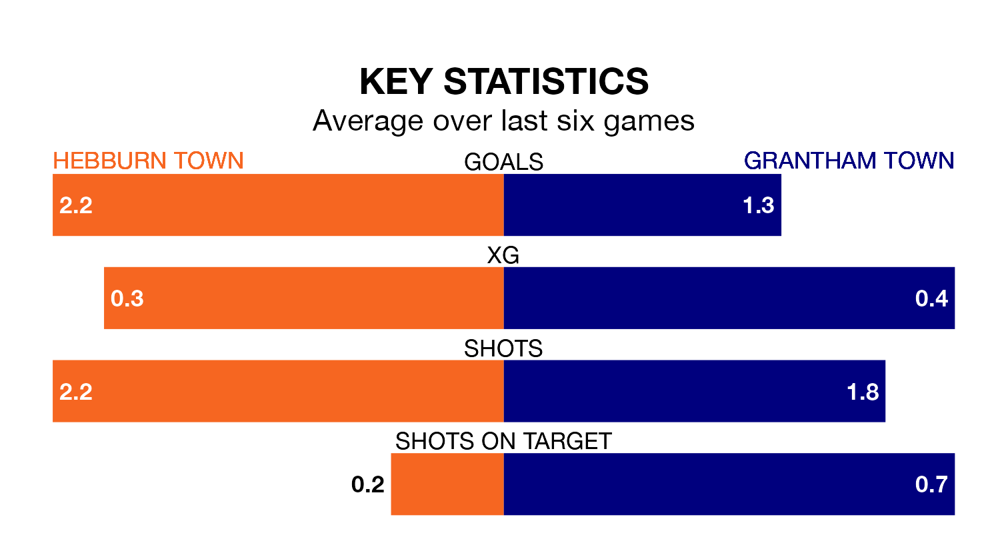

Hebburn Town host Grantham Town in Saturday's match looking to bounce back from defeat last time out in the Northern Premier League Division One East.
Hebburn, who sit second in the league after 17 games, fell to a 3-1 away defeat to Stockton Town on December 16.
They face a Grantham side who secured a draw in their last match, a 2-2 tie with Cleethorpes Town, and who sit 19th in the table.
Hebburn are in good form in the Northern Premier League Division One East, with four wins and a draw from their last six games.
With no wins and a draw over that period, Grantham's form is much worse – they have taken one point from 18, compared to Hebburn Town's 13.
With 33 goals in 17 games so far this season, the home side are the league's joint-third-highest scorers with 1.9 goals per game. And they are conceding fewer than average, letting in 20 goals at a rate of 1.2 per game.
Grantham Town, meanwhile, are below average scorers, with 1.4 goals per game, compared to a league average of 1.6. They have conceded 2.4 goals per game.
Updated: 15:16, 21/12/23